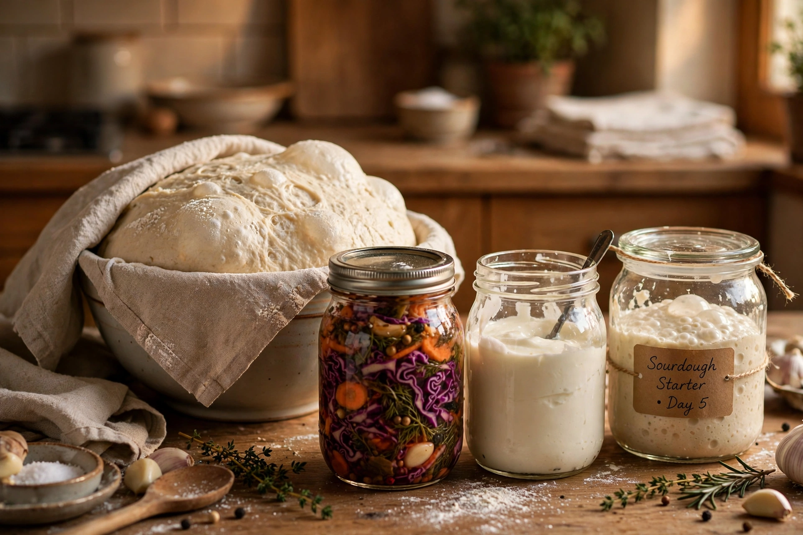

| Fermentation in food processing | |
|---|---|
| Process | Microbial conversion of sugars to acids, gases or alcohol |
| Microorganisms | Yeasts, lactic acid bacteria, acetic acid bacteria, molds |
| Examples | Bread, beer, wine, yogurt, cheese, sauerkraut, kimchi, soy sauce, vinegar |

In food processing, fermentation is the conversion of carbohydrates to alcohol or organic acids using microorganisms — yeasts or bacteria — under anaerobic conditions. Fermentation usually implies that the action of microorganisms is desired. The science of fermentation is known as zymology or zymurgy.
Lactic acid fermentation, carried out by bacteria such as Lactobacillus, preserves vegetables (sauerkraut, kimchi, pickles), sours milk into yogurt and cheese, and flavours sourdough bread. Alcoholic fermentation by yeasts such as Saccharomyces cerevisiae produces beer, wine and leavened bread. Acetic acid fermentation converts ethanol to vinegar, and alkaline fermentations produce foods such as natto.
The primary benefit of fermentation is the conversion of sugars and other carbohydrates into preservative organic acids — the acidity inhibits spoilage organisms and pathogens. Fermentation also enriches foods with protein, essential amino acids and vitamins, removes antinutrients, develops flavour and texture, and reduces cooking time and fuel use.
Fermented foods date to the Neolithic era; chemical analyses have identified fermented beverages in China around 7000 BC. Louis Pasteur demonstrated in the 19th century that fermentation is caused by living microorganisms, founding modern food microbiology.
See also: Fermentation · Yogurt · Kimchi · Sourdough